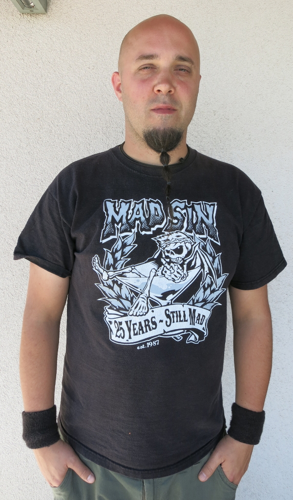
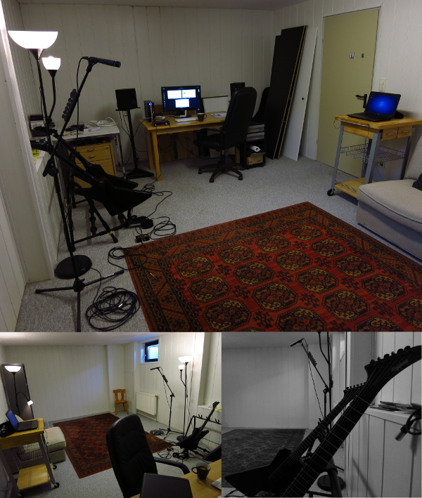

LMP Asks #12: An interview with Sebastian Posch
This month LMP talked to Sebastian Posch, Linux enthusiast and guitar teacher who likes to incorporate Linux into his teaching sessions.

Hi Sebastian and thank you for taking the time to do the interview. Where do you live, and what do you do for a living?
First of all, thank you very much for doing this interview with me! I was born in 1978, I live in Austria with my wife and our two dogs, close to one of the larger towns next to Vienna. I work as a guitar teacher, fortunately we have a house with a large basement where I do the teaching and in the same basement studio I work on music production.
I am an introverted guy and in some cases I would even describe myself as an autistic person. I need the quiet countryside with its mountains and forests to be able to live peacefully and to keep my creativity going. On the other hand an occasional visit to the intricate cities can also give me some creativity boost.
At the moment I am working a lot on improving my teaching method, further I'm working on a custom vocal booth for my studio and of course I also have a few personal music projects going on. Unfortunately I'm not an artist who has actually released an album yet but that will change soon. You can follow me on Google+ or on my website www.sebastianposch.at
What is your musical background?
When I was in ground school in the 80's, there was a lot of tape trading going on. So I've listened to Heavy Metal bands like Running Wild and Helloween when I was only 8 years old or so. I had the best Walkman ever! It was some Sony Walkman with an equalizer panel on the front. I still remember it had such a great sound. The hours I've spent tweaking the equalizer deepened my knowledge about music and guitar sounds basically.
Then I got my first electric guitar at the age of 11 or so. A friend borrowed a drumkit at the same time and we jammed for a year or two. This was the early 90s, so Thrash and Death Metal were very popular.
Our first musical endeavours were not very successful. I didn't even know power chords so I only played on a single string all the time. Our first and only gig was at some birthday party with a few dozen people. Our band didn't even have a name ... When it all fell apart I unfortunately took a long break from guitar playing in general.
When I was 20 I only played guitar on and off, and I was busy with work and other things in my life until fucking 2011. This is such a long time without playing guitar and I regret this a lot! But since then I try to catch up and I work hard on my guitar skills daily. The guitar teaching business helps a lot, not only do my students learn cool stuff, I also learn along with them.
What is your typical workflow when making music?
Basically my philosophy is: Let the music write itself. It is already there, your task is to just discover it. And I'm a meat and potatoes kind of guy. I just sit down with the guitar and do warm-up routines or spend some time noodling around. Then usually some simple riffs or melodies will pop out of nowhere.
I'll record the riffs, assign each of them some obscure name and save them for later. I have collected thousands of riffs and licks over the years. I mostly use Audacity for these quick recordings and do some quick drum beats in Hydrogen. I don't use any version control for my stuff but I might do that soon.

Sebastian's studio and guitars
Right now I'm working on some type of solo gig project which will feature acoustic and electric guitars and several layers of ambient background tracks. I intend to play this live with a backing track as soon as it's finished. I'm not sure about the style yet, it is probably going to be some mystic Celtic guitar music, but with some good metal influences. My plan for this project is also to use a lot of video imagery and sound effects and of course use Linux to produce all of it. I am also learning the piano especially for this project.
What is your history with Linux?
I've been a software developer since age 19. After learning C/C++ and OpenGL for just a few months I was lucky to get immediately hired as a junior developer in the only major games company in Austria; that kicked ass! This was the time of Windows 98/2000 and to me there was no Linux in sight yet.
I got the chance to work on some larger strategy games and on some smaller titles in a very nice team until the company had to close down. So when it closed down, the whole indie game dev scene began to fascinate me.. Being unemployed, I tried real hard to get some indie games off the ground and sell them, but for several reasons it never worked out. That's why I decided to switch to web development, working as a freelancer for a living which I still have been doing until recently.
So with the web development I guess that's where Linux really came into the picture for me. I have been using some flavours of Linux ever since, on all of my machines and of course on the servers. Now it makes only sense to continue my relationship with Linux, this time for music production. At the moment I use Ubuntu Studio with the Gnome desktop and I always try out other distros like KXStudio on the side.
Why do you feel open source is important, and what for you is the most important aspect of Linux audio?
As a developer (or ex-developer) I know open source is a proven concept and more companies need to follow it. I would never have been able to do my work as a web/software developer without open source projects. SDL, Apache, PHP, symfony framework, jquery, ... the list is so long that it is impossible to post here. We are truly standing on the shoulders of giants. I don't have too much experience with Linux Audio yet but it seems to be the same there.

Sebastian also enjoys art
How do you incorporate Linux in your guitar lessons?
I obviously use Linux products like Hydrogen and Guitarix all the time. I use them to create some practice routines and backing tracks tailored to my teaching method. I don't have any real amps in the studio to plug my guitar into. Oh, and I have some A/B box pedal type of thing. I let my student practice some lick, and when I want him to stop I'll just stomp on the A/B pedal and it'll interrupt his signal and switch to my own signal going into Guitarix instead. It's better than yelling "stop playing!" at the student ;)
How do you get your guitar signal into Guitarix?
My guitar goes into an A/B box and from there into my Focusrite Scarlett 2i4, because that's one of the more affordable interfaces and thanks to the linuxmusicians.com forums I knew it would work with Linux. Before the Focusruite I've used one of those Behringer "Guitar Link" devices for some time.
Do you use many stompbox emulations in Guitarix?
At the moment I'm not using any as far as I'm aware of. I'm planning on buying a MIDI foot controller for switching presets and keep everything as simple as possible.
You recently contributed some Guitarix presets to musical-artifacts.com. Can you tell us a bit about about that?
Musical-artifacts.com is a new site which aims to collect little bits and pieces for producing music freely. So the owner of the site put some of my Guitarix presets there. Right now my presets are sort of scattered all over the place; I will try to produce better packages soon and then put them there (maybe group presets by music genre or whatever)
What do you feel is currently lacking in Linux audio?
I think the whole Linux world in general just has a marketing problem. All the projects kick ass but without marketing and a good website and all that, the user base will remain small. I initially gravitated towards projects like Gnome and Ubuntu not only because they are quite stable but probably because they have a bit more marketing budget compared to the other projects. Technically I can't compare Linux Audio applications to the other platforms; I've never used ProTools for example. As a session musician you might not necessarily need to use ProTools at all; you can record on Linux in Ardour or whatever and deliver the stems as WAV files to the client.
Are there any FLOSS projects that you are excited about at the moment?
With LibreMusicProduction.com it has become easier to track all the updates going on in the Linux Audio world. Great site! I am a huge fan of Guitarix and I'm honoured to have my demo video showing up on the Guitarix.org homepage right now.
Guitarix just works out of the box, never crashes and it saves me a lot of money. To me it doesn't make sense anymore to buy some Marshall head for 2000 $. It might look cool but it only gives you 2 channels or something and when you want to alter your sound you need expensive pedals to modify the tone. So I will use digital amp software exclusively in the future and never buy amps anymore. I mean pedals are kind of fun because they look cool and they are fun to play around with, but so is Guitarix. Also you can always do both. My friend and me hooked up a Boss HM-2 Heavy Metal pedal in front of Guitarix (to get that infamous Swedish Death Metal sound) and it worked great.
What resources have you found most useful on your Linux audio journey?
Definitely the linuxmusicians.com forums! People are very friendly there and very experienced. The first time I set up JACK and Guitarix was in 2012 or 2013 I think. It wasn't easy to set up but I'm glad I made it :) Nowadays it's a bit easier, the article on LibreMusicProduction.com about setting up Guitarix is really cool.
What changes, if any, would you like to see within the Linux Audio community?
As I've said before, some better marketing materials and maybe some better documentation might help a lot to attract new users. The new websites of Guitarix and Calf-Plugins are a great example.
I guess it also depends which part of Linux Audio you mean; I mean I will be a Desktop PC user for a long time to come, I don't even have a smartphone. So my interest in PC Desktop applications is still very high. I don't even know what's going on on Android basically.
I guess I should also try to contribute more in the future. At the moment I show Hydrogen and Guitarix to all my students. They are excited about what these tools can do but they probably won't set up JACK on their own laptops etc.
I was thinking about creating a Facebook event for a local "Linux Audio Workshop" and see if there are any people who would like to come over to my studio and check out Linux as a music production platform. I could show them around on Linux a bit and show them some tools and produce a simple song or something. I might do that soon!
What advise would you give to a new Linux Audio user?
The same advice I would give to a new Linux user in general: Don't be afraid of the command line, it's your best friend :) And don't be so afraid of breaking stuff, just set up some spare laptop with some Linux distro and experiment the hell out of it until you get comfortable for a full switch to Linux, if you desire to do so. I haven't used a Windows machine in over 5 years and I'm happy with it.